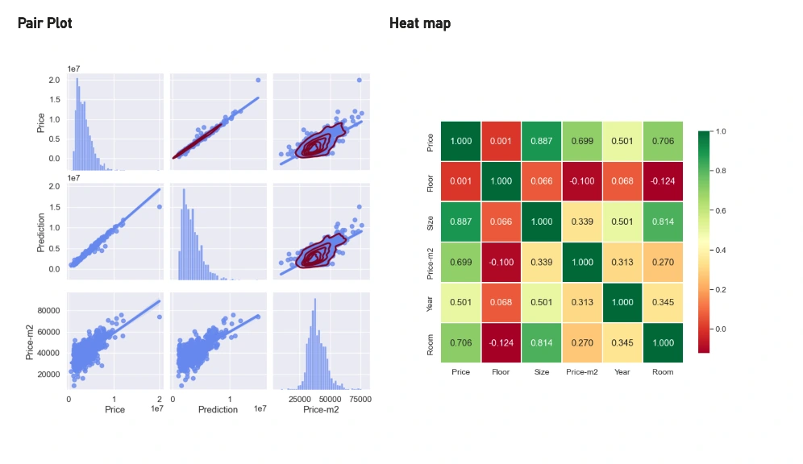
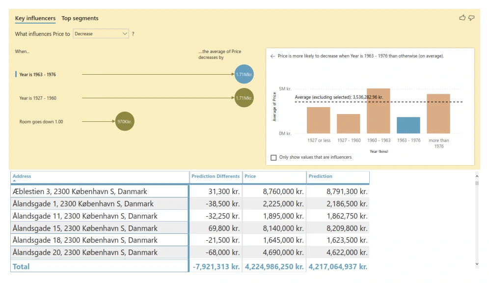

PROJECT 02 — DATA & MACHINE LEARNING
Machine Learning-Based Apartment Valuation.
Using data to explore Copenhagen’s changing housing market.
This project explored how historical housing data could help estimate apartment values in Copenhagen, focusing on Amager and the 2300 postcode.

Project gallery.


THE PROJECT
Understand the challenge.
Housing prices depend on many changing factors. The task was to find useful patterns across homes and across time, then present the results in a way that people could understand.
Turning a complex housing dataset into clear predictions and visual insights.
HOW I APPROACHED IT
From idea to execution.
- 01
Data preparation
Worked with a historical dataset covering 1,234 Amager properties and approximately ten years of market changes.
- 02
Prediction work
Applied Python and a machine-learning approach to analyse patterns and estimate prices.
- 03
Readable results
Used Power BI to communicate trends, comparisons and the predicted price outcome.
TOOLS & TECHNOLOGIES
- Python
- Power BI
- Machine Learning
- Data Analysis
WHAT IT SHOWS
What the work delivered.
The original project write-up reports 97% prediction accuracy for the model. That is the project's reported result, not a new independent verification.
Original title: “Accommodation Price Prediction in Copenhagen: A Machine Learning Approach.”
CONTINUE EXPLORING
Explore the work.
Explore other case studies in my portfolio.
BACK TO ALL SIX PROJECTS